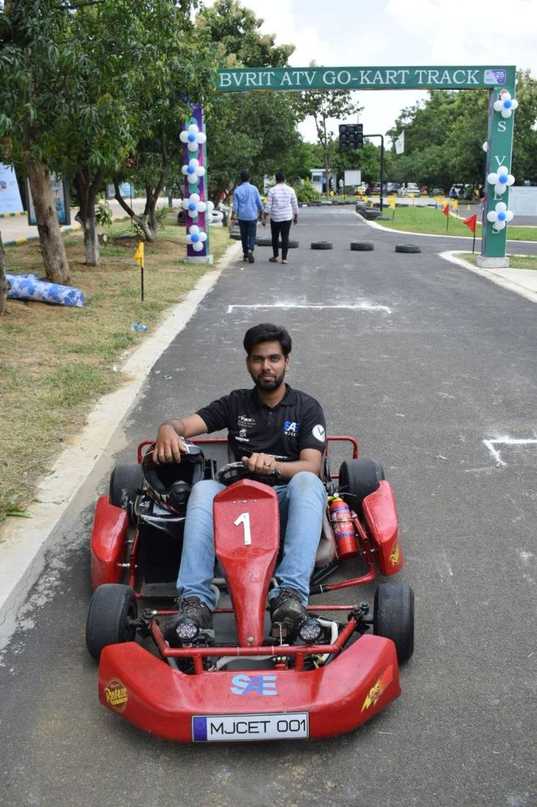
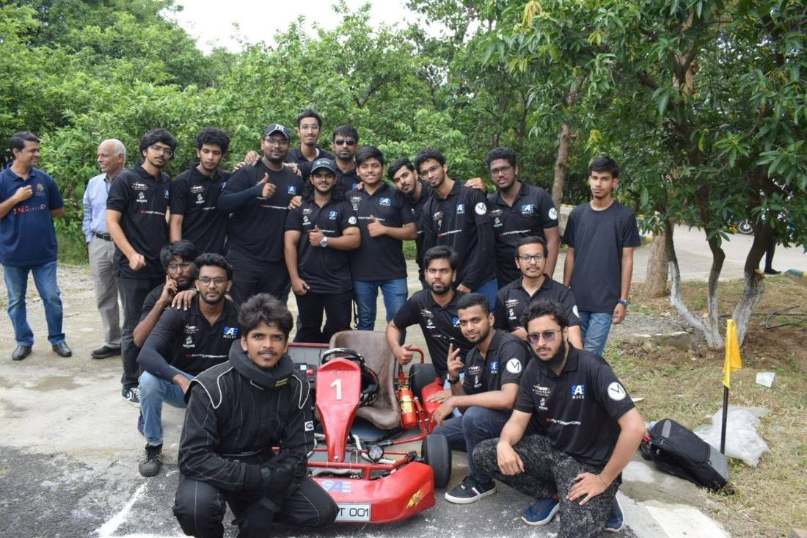
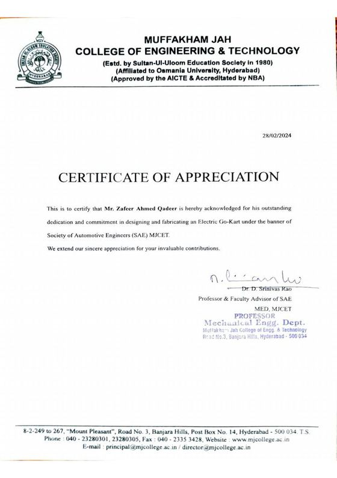

05 / DESIGN LEADERSHIP
Electric Go-Kart
A team. A machine. A finish line.
Leading SAE Team Asphalt from design and fabrication to testing and competition.
- Role
- Team captain, 15+ members
- Context
- SAE Team Asphalt, MJCET, across IPEC 2K23, BAJA 2022 and SUPRA 2023
- Tools
- Steering geometry, braking calculation, build scheduling, on-site problem resolution
- Scope
- Design, fabrication and racing of an electric go-kart
- Output
- Second nationally at IPEC 2K23
- Skills
- Steering geometry
- Braking calculation
- Chassis fabrication
- Build scheduling
- Team leadership
- Competition scrutineering
I led design, fabrication and testing of an electric go-kart to second place nationally at SAE IPEC 2K23, and ran steering geometry, braking load and structural thermal analysis in ANSYS for the SAE BAJA 2022 vehicle.



2nd nationallyteam of 15+ members

OPEN FULL SIZE ↗